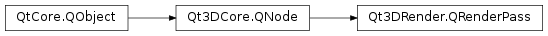

Qt3DRender.QRenderPass¶
Synopsis¶
Functions¶
- def
addFilterKey(filterKey) - def
addParameter(p) - def
addRenderState(state) - def
filterKeys() - def
parameters() - def
removeFilterKey(filterKey) - def
removeParameter(p) - def
removeRenderState(state) - def
renderStates() - def
shaderProgram()
Slots¶
- def
setShaderProgram(shaderProgram)
Signals¶
- def
shaderProgramChanged(shaderProgram)
Detailed Description¶
Encapsulates a Render Pass.
A
Qt3DRender.QRenderPassspecifies a single rendering pass - an instance of shader program execution - used byQt3DRender.QTechnique. Render pass consists of aQt3DRender.QShaderProgramand a list ofQt3DRender.QFilterKeyobjects, a list ofQt3DRender.QRenderStateobjects and a list ofQt3DRender.QParameterobjects.
QRenderPassexecutes theQShaderProgramusing the givenQRenderStateandQParameternodes when at least one ofQFilterKeynodes being referenced matches any of theQFilterKeynodes inQRenderPassFilteror when noQFilterKeynodes are specified and noQRenderPassFilteris present in the FrameGraph.If the
QRenderPassdefines aQParameter, it will be overridden by aQParameterwith the same name if it exists in any of theQTechnique,QEffect,QMaterial,QTechniqueFilter,QRenderPassFilterassociated with the pass at runtime. This still can be useful to define sane default values.At render time, for each leaf node of the FrameGraph a base render state is recorded by accumulating states defined by all
QRenderStateSetnodes in the FrameGraph branch. EachQRenderPasscan overload this base render state by specifying its ownQRenderStatenodes.// Create the render passes QRenderPass *pass = new QRenderPass(); // Create shader program QShaderProgram *glShader = new QShaderProgram(); // Set the shader on the render pass pass->setShaderProgram(glShader); // Create a FilterKey QFilterKey *filterKey = new QFilterKey(); filterKey->setName(QStringLiteral("name")); fitlerKey->setValue(QStringLiteral("zFillPass")); // Add the FilterKey to the pass pass->addFilterKey(filterKey); // Create a QParameter QParameter *colorParameter = new QParameter(QStringLiteral("color"), QColor::fromRgbF(0.0f, 0.0f, 1.0f, 1.0f)); // Add parameter to pass pass->addParameter(colorParameter); // Create a QRenderState QDepthTest *depthTest = new QDepthTest(); // Add the render state to the pass pass->addRenderState(depthTest);See also
QRenderPassFilterQFilterKeyQParameterQRenderStateQEffectQTechnique
-
class
PySide2.Qt3DRender.Qt3DRender.QRenderPass([parent=nullptr])¶ Parameters: parent – PySide2.Qt3DCore.Qt3DCore::QNodeConstructs a new
QRenderPasswith the specifiedparent.
-
PySide2.Qt3DRender.Qt3DRender.QRenderPass.addFilterKey(filterKey)¶ Parameters: filterKey – PySide2.Qt3DRender.Qt3DRender::QFilterKeyAdds
filterKeyto theQt3DRender.QRenderPasslocal filter keys.
-
PySide2.Qt3DRender.Qt3DRender.QRenderPass.addParameter(p)¶ Parameters: p – PySide2.Qt3DRender.Qt3DRender::QParameterAdd
parameterto the render pass’ parameters.
-
PySide2.Qt3DRender.Qt3DRender.QRenderPass.addRenderState(state)¶ Parameters: state – PySide2.Qt3DRender.Qt3DRender::QRenderStateAdds a render
stateto the rendering pass. That implies that when the pass is executed at render time, the globally set render state will be modified by the states defined locally by theQt3DRender.QRenderPass.Note
not defining any
Qt3DRender.QRenderStatein a pass will result in the pass using the globally set render state for a given FrameGraph branch execution path.
-
PySide2.Qt3DRender.Qt3DRender.QRenderPass.filterKeys()¶ Return type: Returns the list of
Qt3DRender.QFilterKeykey objects making up the filter keys of theQt3DRender.QRenderPass.
-
PySide2.Qt3DRender.Qt3DRender.QRenderPass.parameters()¶ Return type: Returns a vector of the render pass’ current parameters
-
PySide2.Qt3DRender.Qt3DRender.QRenderPass.removeFilterKey(filterKey)¶ Parameters: filterKey – PySide2.Qt3DRender.Qt3DRender::QFilterKeyRemoves
filterKeyfrom theQt3DRender.QRenderPasslocal filter keys.
-
PySide2.Qt3DRender.Qt3DRender.QRenderPass.removeParameter(p)¶ Parameters: p – PySide2.Qt3DRender.Qt3DRender::QParameterRemove
parameterfrom the render pass’ parameters.
-
PySide2.Qt3DRender.Qt3DRender.QRenderPass.removeRenderState(state)¶ Parameters: state – PySide2.Qt3DRender.Qt3DRender::QRenderStateRemoves
statefrom theQt3DRender.QRenderPasslocal render state.
-
PySide2.Qt3DRender.Qt3DRender.QRenderPass.renderStates()¶ Return type: Returns the list of
Qt3DRender.QRenderStatestate objects making up the render state of theQt3DRender.QRenderPass.
-
PySide2.Qt3DRender.Qt3DRender.QRenderPass.setShaderProgram(shaderProgram)¶ Parameters: shaderProgram – PySide2.Qt3DRender.Qt3DRender::QShaderProgramSee also
PySide2.Qt3DRender.Qt3DRender::QRenderPass.shaderProgram()
-
PySide2.Qt3DRender.Qt3DRender.QRenderPass.shaderProgram()¶ Return type: PySide2.Qt3DRender.Qt3DRender::QShaderProgramSee also
PySide2.Qt3DRender.Qt3DRender::QRenderPass.setShaderProgram()
-
PySide2.Qt3DRender.Qt3DRender.QRenderPass.shaderProgramChanged(shaderProgram)¶ Parameters: shaderProgram – PySide2.Qt3DRender.Qt3DRender::QShaderProgram
© 2018 The Qt Company Ltd. Documentation contributions included herein are the copyrights of their respective owners. The documentation provided herein is licensed under the terms of the GNU Free Documentation License version 1.3 as published by the Free Software Foundation. Qt and respective logos are trademarks of The Qt Company Ltd. in Finland and/or other countries worldwide. All other trademarks are property of their respective owners.